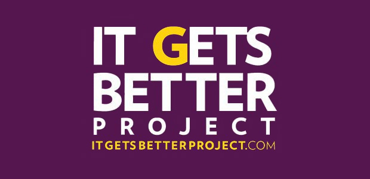

It does get better

The video we watched in class today is a submission to the recently popularized campaign against suicide within the LGBT community known as "It Gets Better". The movement, titled for its literal expression, aims to show individuals discriminated against for their sexual orientation that life does get better. People from all varieties of life have contributed to "It Gets Better", including many celebrities. This particular video is a personal experience, expressed in a letter to the gentleman's uncle Ronnie - a man who had taken his own life, likely due to the prejudice he experienced as a gay male. While its primary purpose is an expression of the ideology that there are equally, if not superior positive facets of life to focus on and look forward to; it seems to me that having an audience to recite his letter to was a very cathartic process for the young man. The video, and letter therein, is uncensored both in language and emotion; it emboldens the narrative and creates a much larger impact. My personal projects could benefit from such structure.
What does the sun feel like, again?
South Park's episode, "Make Love not Warcraft", is a satirical jab at the culture surrounding massive multiplayer online role playing games - abbreviated MMO or MMORPG - and the stereotype of obsession that is associated with it. The creators, Matt Stone and Trey Parker, depict the famed South Park quartet as compulsive, socially inept and obese after their introduction to the game, "World of Warcraft". Having been antagonized by a high-level player, the children decide to stand up against their virtual bully by siphoning away weeks of their time in dedication to leveling up and defeating their aggressor. In doing so, they forego reality in lieu of the game; even after accomplishing their goal by the episode's end, they ironically declare themselves "free" to play the game and continue to do so.
After watching the episode from 2006, anyone not familiar with MMO games would likely walk away with the impression that they're a hybrid bastardization of meth meets McDonalds and those that play are the soulless result of someone's mad inquiry into what an obese crack addict would look like. While the perverse generalization is not without some merit, it falls short of accurately describing the majority of people who enjoy MMOs. I, myself, have played several offerings, including Guild Wars 2, Ragnarok Online, and TERA. Admittedly, I've never played World of Warcraft, but I can safely assume its similarity to the games I have played. Like myself, the people I've encountered online have largely been well educated, active in society, and generally amicable (give or take a few asshats). Truthfully, the problem isn't with the games themselves, or the businesses that produce them. There will always be people that have 'addictive personalities'. Suffice to say, that doesn't mean you'll find yourself fighting the urge to be near them. Whether it's gambling, narcotics, alcohol, adrenaline (I'm guilty here), or otherwise, there will be those that suffer from a compulsion to relentlessly engage in a given activity. Does that mean we should rush to admonish anything that can become an addiction? Hardly, lest the entire populace label themselves hypocrites. The issue here is one of relativity; because fewer people partake in MMOs, the rest of society feels more justified in attacking something they do not understand. As time goes on, and video games become increasingly ubiquitous, the issue subsides into obscurity. Of course, it then becomes a divide in age when the old start reminiscing of the good, wholesome time spent on more worthwhile endeavors like protesting integrated schools. I digress, however, as future generations will likely look back similarly on us with regards to gay rights. The point being, just as new technologies are created so too are new cultures and habits. When they're not understood - or worse yet, feared - they're always mocked, belittled, and attacked. With any luck, it'll become a psychological response only mentioned in history books as our enlightened progeny research us from the matrix.
Now, if you'll excuse me, I need to get back to Guild Wars so that I can feel superior to those lifeless hacks obsessed with Call of Duty.
I actually only bleed red, not white and blue
Chrysler's 2011 Super Bowl ad takes a hard contrast to the mold typically seen from car manufacturers -- you know, the ones that tell us life would be fantastic if only we'd drive their particular brand. In lieu of adrenaline junkies or wide-eyed young mothers, Chrysler plays on our pride as Americans; they pull at the heartstrings of our cultural identity -- enduring hardship and remaining tenacious in the face of such adversity. It's not surprising that the once glorious, now dilapidated landscape of Detroit best suited their purpose. What better than the origin of the American auto industry? Imagery of Detroit conveys the struggle of its downfall and continued persistence while a gruff voice aims to inform us why this particular city is more apt to deliver a quality, luxury product. The idea being that you can't know the finer things in life without also understanding what it's like being raked over the coals, so to speak. It plays on the dichotomy of dark versus light: without one, how do you gauge the other? While the philosophical underpinnings of that argument are plenty valid, I'm sure I can trust European engineers not to sell me an Audi made of scrap metal and human feces. So, if not to rally behind the destitute city, why should I buy an American vehicle? Further, why should I specifically buy Chrysler?
Because Chrysler is "imported from Detroit".
Maybe Chrysler doesn't understand the whole "imported" thing, or they're eluding to something else. Ah, it's likely the little problem with considerable swaths of jobs being outsourced and the majority of purchases being made on imported goods. Here, they're taking a not-so-subtle approach to enticing us -- or perhaps shaming us -- into buying good old American made machinery. The message seems to have worked, too. As of 2014, the commercial has over 16 million views on Youtube and is resoundingly supported by its viewers. Information regarding the company's sales figures appear to suggest a correlation between their new direction and notable increases in profits comparing each quarter to the year prior (seen here). On that note, let's not mistake Chrysler's desire to drive business for self-sacrificing patriotism; they're still concerned about how many trailing zeros they see on the latest revenue statements. Even so, the message they're sending isn't without merit. Don't just buy American, though. Help drive American companies.
With that said, really, you should only consider a Tesla. Sorry, Chrysler.
An academy of code
Although I'm a veteran of coding (read: total social troglodyte), I can appreciate the value something like CodeAcademy offers to its target audience; even if you're experienced, it's always a good idea to refresh your memory on proper coding standards. I know that I'm quite attentive to the proper structuring of my code, but that's simply because I have this little problem called "obsessive compulsive disorder". From my observation, it's not an issue most programmers deal with. That aside, I'd like to see CodeAcademy continue to expand its offerings. There's a solid base there now, covering the basics of HTML all the way to some non-object-oriented languages like Ruby and Python as well as the jQuery library for Javascript. Certainly, it's a great base for simple application development or a start for learning front-end web development, but I think it'd be beneficial for server-side folks as well as software developers if the likes of PHP and C++ were added.
The optimist in me says that the intuitive interface and immediately accessible results of altering your code in the web-based editor are a byproduct of trying to make the process more accessible and use-friendly. However, the realist in me understands that this is more likely to do with the fact that most programmers can't be bothered to put pants on when they're working, let alone shuffle between windows or tabs.
I remember the day when I had to code by hand, and the only options for coloring your background were "000" and "fff" -- now these spoiled brats get named variants like "fuchsia" or some non-sense. It's a matter of the proverbial hill, I guess.
"Hybrid" is a polite way of saying "mutt"
Admittedly, I postponed taking my first tier writing course because I'm not a fan of general education courses. I appreciate the need for them, although I blame a relatively poor K-12 education system -- relative to other countries -- for our their necessity in US universities. Of course, a cynical (realistic) view is simply that education has now transitioned into a business sector not unlike a Walmart for bachelor degrees and, what better way to ensure profit then to mandate an entire year's worth of courses unrelated to your end pursuits. Surely, it makes more sense to join the rest of the world in structuring our degrees at three years instead of the average bloating up toward five years nowadays. I suppose I'll just continue to lament the fact that I wasn't born in Australia -- the land where everything is out to kill you, but at least you're not forced into lifelong servitude via debt. Everywhere has it's pros and cons.
That said, as far as general education courses go, this course hasn't been a royal waste of my time. I credit that to our instructor. She's done what she can to ensure the content we've covered has been engaging and the assignments a challenge. Usually there isn't much to take away from a course like this if you've had a half-decent education prior to attending university, but I've appreciated my time in WRA 110. Truthfully, it didn't hurt that it was a "hybrid" course, either. Being an autodidact, I prefer not being spoon-fed how to use a oxford comma for two weeks straight. I'll assume that's what the poor souls in other sections have been doing all semester.
You're a videographer, Harry
One of the many, many projects of the WRA 110 class is the "multimodal remix". No, it's sadly not a new album for Kid's Bop, rather a project that has tasked me with translating a prior topic from my papers into a video. My topic of choice was obvious, and can be summarized with a single quote by Portal 2's degenerate robotic orb: "Spaaace". From start to finish I had the opportunity to learn new skills and polish ones I've not used in many years. I decided, ultimately, to create a documentary regarding the importance of space exploration. The importance, as we all know, is derived from the fact we'll all go absolutely insane if ANGELS rain down on us from the sky, a la Evangelion. Can we just start building the damn GUNDAMs now? Please?
Optimism aside, it'd be a bummer to not have a colony on the moon before my own demise. That's why I've decided to raise awareness with this documentary. At this point it is going well beyond the initial scope of the project, with several interviews from Michigan State University astrophysicists and way too many hours of post-processing. Truthfully, you'd imagine that shooting video for a topic is an easier form of media than have to slave away at a keyboard, typing monotonous line after monotonous line, but it's not. Instead, you get to spend your time editing video, replaying monotonous quote after monotonous quote. So, the question is, when do I graduate Hogwarts' school of Filmography?
And the lord, Bill Nye, said unto them: "Science!"
Though some would spout nonsense that science is a religion, there is a sort of spiritual nature to research work. By spiritual, I mean you have to believe at the end of all of it, you'll be in a better place than the purgatory of having to cite every single line you write. Anyone who's not a masochist need not apply. If I had to take one thing away from the experience of writing a formal research paper -- something I'm well experience in -- for this course, I'd have to say it was the reminder that science isn't always awesome beakers and bowties. In fact, most science is highly repetitive, mundane research. That's unfortunately both the beautiful and stress-inducing fact of practicing within a STEM field based in research. I say beautiful because it is the based for which we gain empirical evidence to understand the world around us. If it were any other way, results would no longer be refutable or reinforced because experimentation would not be replicable. Now, I mention this fact about scientific research because while the actual experimentation has the potential to be either exciting or mundane, I've yet to meet a single soul who believes the process of documenting your results and writing papers is anything more than soul-crushing.
Still, I could have gone with an art degree like I originally wanted when I was a teenager. Something, something, working for Starbucks.
She can't take much more, Captain!
So, you're tasked with analyzing a piece of popular culture; it can be anything: a song, a movie, a videogame, or even how Madonna is trying to pass for 27 when she looks older than Methuselah. What then, do you choose to write about?
Answer: Star Trek
There's no possible alternative in my mind. While the narrative of the Star Trek universe was fantastical in the years immediately after its inception, there are many aspects that almost eerily reflect society today. Although you could write about the civil unrest that seems to be unfolding and the parallels depicted in Deep Space Nine regarding the riots of the 2020s, I thought it more apt to cover the root of social revolt: economic disparity. In the grand universe of Star Trek, it is explained that everyone is free to do as they wish with regards to employment -- to include not working at all -- because resources are no longer scarce. Therein is a fine detail that is only ever briefly covered in the amazing adventures of Captain and crew: resources are not scarce, but they're certainly not infinite, either. That aside, the key point is that currency is not longer useful in their economy and that people who choose to work do so out of the greater human philosophy of progress and cultural fulfillment. It may seem an unattainable goal today, and perhaps we too will have to go through similar bouts of civil chaos, however, it is not out of our reach to implement steps toward a post-scarcity society.
Truthfully, I just want one of those communication badges.
Get up to 88 miles per hour, Marty
It's really a "blast from the past" thinking about your childhood. Radical 80s hairstyles and the fact the Nicholas Cage was in every other movie throughout the 90s aside, I don't often reminisce about my past. In fact, you could say that I'm permanently rooted in the present. I understand that it's rather hypocritical for a guy who advocates that we need to learn from our history to say, "eh, nothing useful behind me", but I guess my hands are red. If I were to underscore it, it's because I don't find myself recalling any fond memories; quite the opposite, really. Now, I don't intend to turn this into some ‘place of healing' where I talk about how my childhood makes me feel, but I will admit it was slightly cathartic to get it down on paper. Although, it was difficult to push back the urge to immediately light that paper on fire. If it weren't for the fact I needed to turn the damned thing in for a grade, I'd have done just that, too. Oh well, it's just as fun throwing a thumb drive into a lake, but I digress.
I guess the point is that, while some of us like to act like pretty stonewalls, it's sometimes a good idea to get a little graffiti off the backside while no one is watching. If they catch you, slap them in the face to assert your dominance; a hefty roar can't hurt, either.
Neo said "whoa" and the Matrix exploded
When you've been programming for years you eventually start looking at the entire internet as streaming lines of code. If you've seen the documentary about our robotic overloads called "The Matrix", it's pretty much the same thing that happens with Neo. They say that programmers are great when they're lazy. The reasoning being that a lazy individual will find the most efficient, expeditious way around a problem -- the path of least resistance, as it were. If that is the measure for a great programmer, then I am among the worst that have ever used the title. I have a neurotic tendency to never be satisfied with my work so I end up creating several iterations of the same website or application when the first would have been more than sufficient. With regards to the course website and this blog/portfolio, I went through no less than three variants which were each coded from scratch. You'd think I'd simply build this on top of a framework or something but nooooo, that'd be too easy. On top of that, I earnestly considered implementing excessive jQuery functions and for what? To feel satisfied that this portfolio, which will likely never see the light of day, will look pretty enough should I ever decided to humiliate myself by letting the world read this drivel? I think not.
I'm starting to get the feeling that I need to register with some institution as a masochist. An endearing masochist, but one none-the-less.
Sometimes you just can't hardly always
My brother used to say that all the time, and I"m still confused as to its profound meaning. Somehow, it feels applicable to my outlook on the past five years of my life. Unfortunately, do to some highly classified experimentation having been performed on me as a child, I"ve been quite ill. Reasons aside, I"ve had to take several "incomplete" grades over the years for classes that I couldn"t finish in time. WRA 110 was no exception and now, a year later, I"m finding myself rushing to complete the last of my assignments. It"s always a relief to be done, but the amount of stress it produces is enough to make tectonic fault-lines jealous. At the very least, the topics for this course were enjoyable, which is rare considering that all my major-related courses feel like they"d benefit from being instructed by an automaton. I just repeat to myself that I only need 17 more credits then I can, I don"t know, perhaps teach broken English to some unlucky children somewhere across the globe. That sounds nice. Of course, for some reason as I finish this class and, having become accustomed to heavy workloads, I"m considering graduate school. I"ve always wanted to earn a PhD, but I don"t know how Dr. Daniels and others kept their sanity as they progressed through that many years of school. Maybe it"s just this university, but I have a suspicion that this is likely a common feeling throughout campuses across the world.